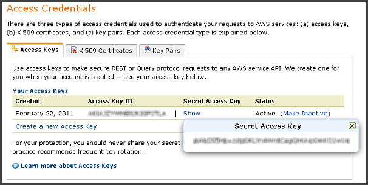
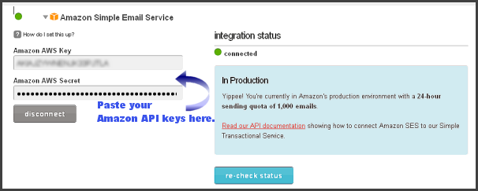
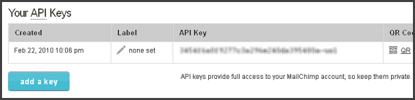
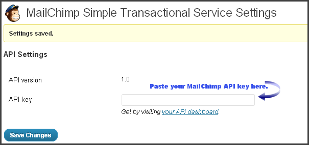
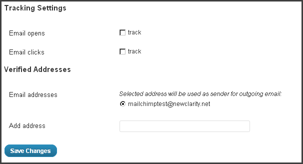

Before you can use this plugin, you'll need the following:
Note: Illustrations on this page have API key values blurred for security reasons.
Amazon Web Services provides a number of server based solutions including Simple Email Services, which are used by MailChimp's STS. Go to http://aws.amazon.com/ses/ and log into your account, or create a new one.
 Click to manage your account, then click Security Credentials, then click Access Credentials. You will see a section of the page similar to the image to the right.
Copy and paste both the Access Key ID and the Secret Access Key temporarily into a text file until you can paste them into your MailChimp account settings.
Initially, your Amazon SES account will be put in Sandbox Mode. This means your account is in test mode, and cannot send email to any addresses not previously verified by Amazon. To have your account elevated to production mode, you will need to fill out the request form found on the Amazon SES page. MailChimp has no input over this part of the process. You must satisfy Amazon's criteria before you can switch on Production Mode.
If you do not have account yet, you will need to go to http://www.mailchimp.com/signup/ and sign up.
Remember that MailChimp's Forever Free accounts do not support MailChimp STS. You will need a paid account.
From the menu at the top of the MailChimp page, expand Account, and click on Integrations. Scroll down to Amazon Simple Email Service and click. Here is where you paste your Amazon keys into the form shown at left.
There is also a link (not shown) that links to Amazon's SES site that will explain SES capabilities and policies, and will let you fill in the request form for Production Mode.
From the menu at the top of the MailChimp page, expand Account again, and select API Keys & Authorized Applications. Copy your MailChimp API Key to your Clipboard.
There is also a link (not shown) that links to Amazon's SES site that will explain SES capabilities and policies, and will let you fill in the request form for Production Mode.
Log into your WordPress site and install the MailChimp STS plugin. Remember to activate it.
Scroll down in the Admin Dashboard to Settings and click on MailChimp STS. You will see the dialog shown at right. Here is where you paste your MailChimp API key. Click Save Changes.
Once you have plugged in your MailChimp API key, another section of the settings page becomes visible. Here you can check whether you want to track how many of your emails are opened, or clicked. You can see detailed results in your MailChimp account. There is also a visual report available in the Dashboard section at the top of the Admin page.
Below the checkboxes, is a form field where you can enter email addresses that will be used to send emails using MailChimp STS. Remember to add the administrative email address WordPress uses to send emails.
Once you have entered the sender email address(es) the plugin is installed and ready to test. Simply use the form at the bottom of the settings page to send test emails that you can recieve. (Remember if your Amazon account is in Sandbox Mode, you need to register addresses the system will let you send to.)
When you recieve test emails, check the headers to see how the message was routed. If Amazon SES is listed as the sending server, the plugin is working perfectly.